Oi gente, que honra estar de volta. 👸 E que honra saber que o conteúdo dos textos é de interesse de muita
gente! Eu não poderia ficar mais feliz. Espero estar conseguindo provocar curiosidade (e indignação, às vezes)
em
todo mundo, é meu objetivo aqui.
Estou de casa nova! Decidi me mudar, em resumo, porque aqui não dependo de propaganda do Medium e os leitores
podem perambular pelos textos sem estar limitados a um número finito de leituras. Fiquem à vontade, escrevo isso
para vocês. Me mudei também porque aqui... eu posso fazer o que quiser.
🍰🍰🍰🍰
Nesse texto, vou trazer a história de um doce muuuito popular nas nossas casas pernambucanas, conhecido por ser
original dessa terra (ah, e por ser gostoso também). Não vou desapontar ninguém, o doce é pernambucano mesmo. E
nesse
embalo de nostalgia gostosa, desse carinho açucarado e enrolado, desse amor goiabento pelo Recife, pegajoso e
muitas vezes polêmico ao ponto de defender absolutamente qualquer coisa que apareça na praça do Derby, do lanche
no precinho à sala de exibição de filme iraniano, eu vos apresento a...
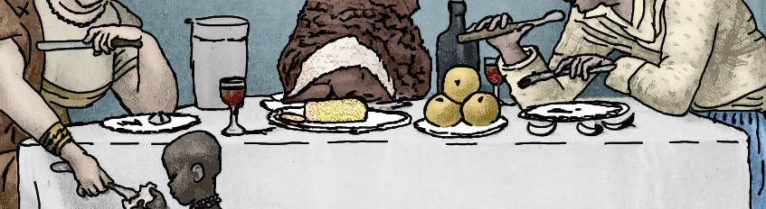
🦀 História do Bolo de Rolo
Como contamos nos textos anteriores, as terras caetés, tabajaras e potiguares passaram a ser atacadas por
portugueses, ingleses, franceses e holandeses, que aos poucos adentraram os territórios, estabeleceram colônia,
implementaram métodos de extração de madeira com escravizados nativos e, especificamente na história que
contamos,
decidiu que a aldeia de Marim dos Caetés, mais tarde Olinda, seria o centro da capitania
independente pernambucana, cuja administração era de Portugal, o reino mais interessado no empreendimento
invasivo dessa terra.
Em Olinda, os líderes nativos foram enganados e forçados a denunciar uns aos outros pelos ataques cotidianos às
vilas portuguesas. Aqueles que se puseram ao lado de Portugal foram incorporados ao modelo europeu dessas vilas
e aqueles que se opuseram ou foram assassinados ou fugiram para o interior, abrindo caminho para a dominação das
várzeas do Capibaribe.
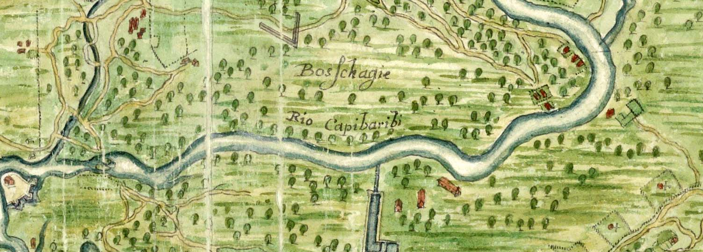
Povoações nas margens do Capibaribe em recorte de mapa do período holandês
Primeiro, os ingredientes
Que delícia que é tomar um suco de caju docinho e gelado, saborear um mousse de maracujá ou um chocolate do bom.
As diversas formas que o açúcar hoje se materializa tem um fundo histórico milenar. Não é que todos os
ingredientes precisem de ter suas histórias contadas, mas o açúcar em específico define o Recife enquanto
cidade, define Pernambuco enquanto uma fábrica gigante e define a história do ocidente. Vamos voar rapidinho por
todos os eventos históricos e encaixar Pernambuco dentro de um contexto muito maior do que apenas "capitania
hereditária do Brasil", mas sim como um dos palcos da maior injustiça da história do mundo ocidental.
🌾🌾🌾🌾
A História do Açúcar: da Ásia até Pernambuco
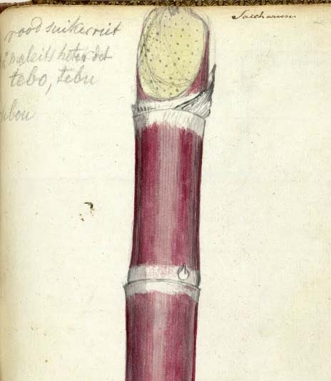
Desenho à lápis de cana-de-açúcar, por Jan Brandes (entre 1779~1878)
(8000 AC) Moradores da Papua Nova Guiné e região se chocam com uma grama fora do comum de tão grande
cujos talos são uma delícia de
mastigar e decidem cultivá-la e dar a seus porquinhos de estimação;
Muambeiros levam mato doce gigante para a Índia, que se contenta (por enquanto) a mastigar
bloquinhos de cana, igual nos acostamentos de rodovias do litoral do Nordeste do Brasil;
(Século 4) Indianos descobrem como transformar o caldo da cana em areia, e inventam o maldito açúcar
refinado;
(Século 7) A Ásia continental se torna o Mundinho do Açúcar. Sobremesas e o incrível "chá com açúcar" é o
item número 1 em presença nas refeições da nobreza chinesa;
(Século 8) O expansivo mundo árabe chega no Mar Mediterrâneo com um capim gigante do oriente que
dizem ser
doce. Cidadãos experimentam e aclamam pó doce que é um sucesso entre as culturas europeias. A planta começa
a
ser cultivada na
Europa e África árabe;
(Século 10) Os árabes, que haviam conquistado a península Ibérica dos romanos, haviam implementado
com sucesso o cultivo da cana por lá;
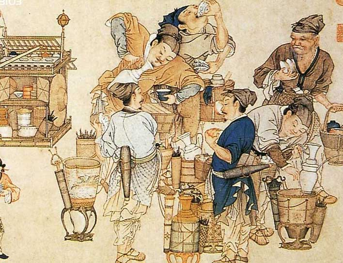
Chineses em jogo de bebida de chá, pintura da dinastia Song (960-1279)
(Século 11) Europeus reclamam:
Eu PRECISO de mais açúcar, a vida é amarga DEMAIS.
(Século 12) Homens vestidos de robocope com cruzes vermelhas nos seus escudos voltam do oriente com
espadas sujas de sangue muçulmano. Eles voltam carregando açúcar e dizem que "a barra está limpa";
Com a barra limpa, Veneza (que era um REINO) tomou para si regiões inteiras no oriente médio para o
plantio de açúcar, pois a barra estava limpa;
Ex-romanos na península Ibérica disseram: "Epa, saiam daqui" para árabes e eles saíram (depois de quase 1000
anos resistindo),
nascendo o que seria Portugal e Espanha;
(Século 14) Ex-romanos-árabes inventam uma nova prensa do caldo da cana, muito mais produtiva e bum do
açúcar da Andaluzia e Algarves deixam população europeia rica ainda mais viciada;
Rainha inglesa reclama do preço do pó branco:
Tem que buscar MUITO longe porque nessa pocilga dessa terra não nasce NADA,
que SACO
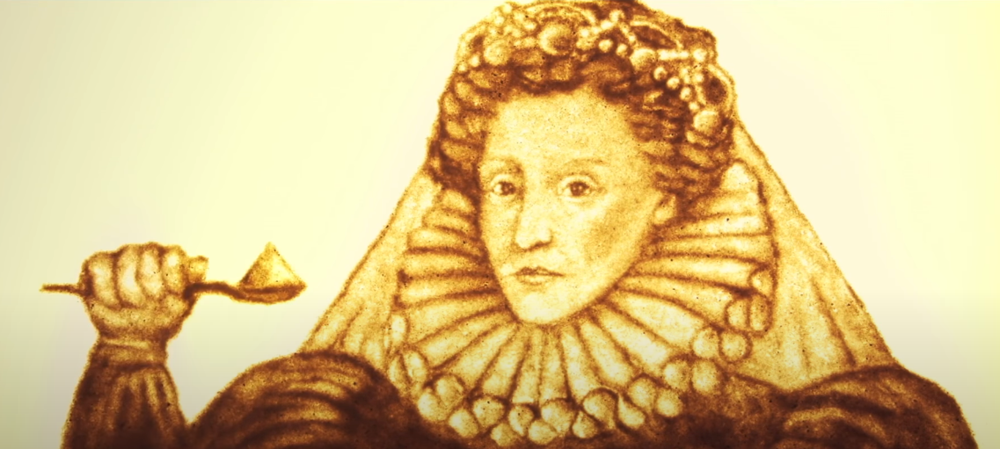
Frame de "That Sugar Film" (2014) retratando a rainha inglesa com uma colher de
açúcar em tela feita com grãos de açúcar
Amizade entre Portugal e Espanha azeda por falta de açúcar. Portugal é obrigado a aprender a nadar e vira
maior explorador marítimo daqueles tempos. Império português passa a ser o comerciante de produtos orientais
na Europa, que tinha muito dinheiro, porque eram simplesmente descendentes dos romanos, que inventaram o
dinheiro como a Europa conhecia;
(Século 15) Portugal invade ilhas na costa africana, constroi o primeiro moinho de engenho de água e
chicoteia pessoas para que eles produzissem mais rápido o pó branco pra vender na padaria de seu Manuel;
Portugal invade o continente africano, recolhe pessoas, despeja-as nas ilhas, chicoteia elas só porquê as
padarias de
Manueis de toda a Europa PRECISAVAM do açúcar;
Veneza, Bélgica e outras nações europeias gostam do modelo português nas ilhas africanas, "gostei",
disseram, e passam a ajudar na produção, criando novos modelos de negócio da produção de açúcar sob chicote
dessa empreitada que viria a ser a startup do horror;
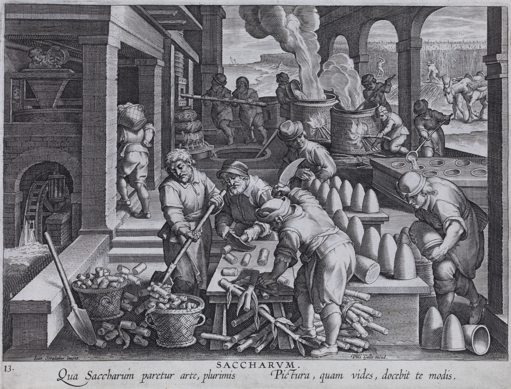
Engenho de açúcar na Europa (aprox. 1580~1605)
"Rumores que se você navegar pro oeste, você chega mais rápido ainda nas Índias..." - era o bafafá na época.
Brancos de toda a Europa fazem vaquinha pra pagar jovens que não tem nada a perder pra sair num barco de
madeira por aí;
Brancos chegam à América;
(Século 16) Brancos não apenas chegam à Pernambuco, como percebem que a startup do horror
seria
simplesmente um sucesso aqui;
O bastardo Duarte Coelho recebe Pernambuco de presente do rei de Portugal, depois de ter matado um
monte de gente na Índia por causa de açúcar e pimenta e ser condecorado como homem de honra pela coroa
portuguesa por isso.
👑👑👑👑
Pernambuco e a Startup do Horror
É discutível se Duarte Coelho (que era bastardo, por isso não herdou terras e consequentemente não tinha
absolutamente nada para deixar de herança para seus filhos) veio à Pernambuco com a intenção de criar uma
colônia de povoamento ou não. Mas fato é que ele e seus herdeiros transformaram a capitania em uma linha de
produção de açúcar como não antes observada. Era uma quantidade colossal, não para a população pernambucana, mas
para abastecer o mundo.
O primeiro donatário de Pernambuco havia aprendido na Tailândia, na China, na Índia e por todo o litoral
africano como estabelecer essa linha de produção. Havia aprendido na Europa como ser um burocrata e esse
primeiro impacto ditou como as coisas funcionariam nas primeiras décadas da nação pernambucana depois da invasão
portuguesa. Ele e seus filhos invadiram e tomaram posse de Itamaracá até o Recife. Repartiram o terreno entre
seus familiares e amigos, em espaços que conhecemos hoje por engenhos de açúcar, mas que na realidade
eram
fazendas inteiras. Elas eram chefiadas por famílias parte, ou muito próximas, da elite olindense (que era
portuguesa). Muitas dessas famílias eram compostas por homens brancos casados com nativas, cujos filhos
formariam uma elite miscigenada. Essas fazendas apropriaram as populações nativas locais e seus costumes
para dentro de si iniciando o impacto português na vida popular do Recife.
Tudo isso funcionou apenas como um teatro de bondade cristã e europeia. Só servia como motor da grande fábrica
de açúcar que Pernambuco se
tornou. Conta o historiador Franz Obermeier que foi uma prática aplicada por toda a América:
Apenas São Vincente e Pernambuco obtiveram sucesso econômico com um novo foco no açúcar [no Brasil]. Sua
produção
era realizada
nas costas dos escravizados. [Pela América,] postos comerciais deram certo onde as alianças entre os
exploradores
europeus e líderes nativos foram firmadas, baseadas em estratégias de casamento, onde esses líderes adotavam
outros nativos como afilhados [parte dessa nova família].
A essa altura da história, o açúcar ainda é uma especiaria caríssima e não existe consumo popular da sua forma
refinada, como consumimos hoje.
Leia mais sobre a chegada de Duarte Coelho em Pernambuco e a elite miscigenada em
postagens passadas. Links disponíveis no fim
desse texto.
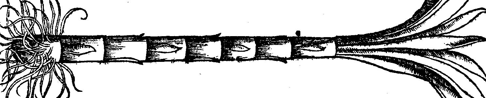
Modo de Preparo do Açúcar
Agora, vamos discutir como nosso delicioso açúcar era produzido nos famosos engenhos.
A palavra "engenho" diz respeito a algo engenhoso, um invento, uma tecnologia. Nas fazendas de açúcar, o engenho
dizia respeito à peça comum, o moinho, que toda a fazenda utilizava para moer a cana e dela extrair seus
diferentes produtos. Comumente, quando descrevemos a fazenda, pensamos logo em casa grande e senzala, mas ela
não funcionava assim. A casa grande era inacessível demais, um reduto isolado da vida comum da fazenda, bem
diferente do que as novelas de época retratam. O dia a dia desse lugar era na senzala, no canavial, no engenho,
nas vilas e no lugar comum a todos: a estrada.
Engenho de cana São Carlos, por Hercule Florence (1840)
A rotina era exaustiva. Todos os dias, os "trabalhadores" do senhor da fazenda conduziam os negros escravizados
da senzala para os canaviais ou para os moinhos, onde cuidariam do plantio e cultivo ou cuidariam do processo de
refinamento do açúcar. Esses "trabalhadores", brancos ou mestiços, fiscalizavam e direcionavam o trabalho
escravizado,
a fim de extrair desse suor os impostos suficientes para pagar o uso das ferramentas, o uso dos próprios negros
escravizados (que na maioria das vezes não era 'posse' desse morador da vila, mas do senhor da casa grande) e
instalações da fazenda como o moinho, as
caldeiras e suas peças, as ferramentas de preparar a terra e o aluguel da vila, tudo era de propriedade do
senhor. Como eles mesmos chamavam, era um "investimento" do senhor da casa grande. De segunda à sábado, essa era
a rotina, com uma folga aos domingos que eram dedicados à cultura
religiosa católica. Os negros também eram obrigados a ir à capela ou igreja da fazenda.
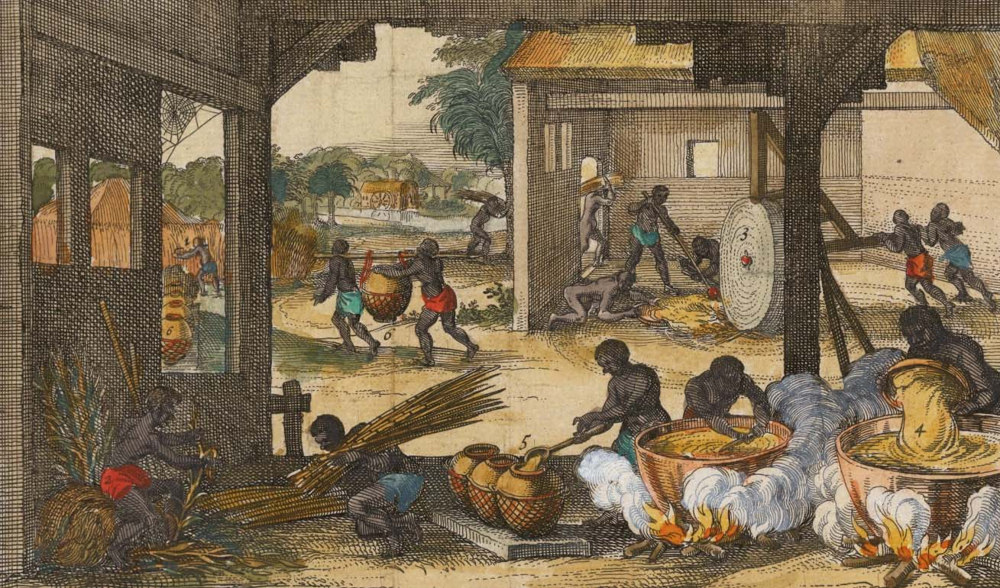
Engenho de açúcar em Pernambuco, ilustração de Nicolaes Visscher (1630)
Nas caldeiras de melaço, os homens trabalhavam mexendo aquele xarope sem cessar, à força, em temperaturas tão
altas que os cozinhava vivos pouco a pouco. As caldeiras ainda soltavam faíscas e chamas que sempre acabavam por
acertar algum dos negros, marcando suas peles de feridas. Peles já feridas pelas torturas à chicotadas e
tratadas com
sal e vinagre, sem direito a grito de dor. Os escravizados eram revezados, intermitentemente, de doze em doze
horas,
maximizando a produção. Constantemente lhes era negada a comida, precisando eles próprios cultivarem suas
plantações de subsistência nos arredores da senzala. Dividiam entre si a garapa que lhes era permitida ter
acesso, a água usada na lavagem do bagaço da cana. Era comum que os negros morressem durante o trabalho
compulsório, seus corpos recolhidos por seus colegas de servidão e sepultados de forma simples ou atirados aos
rios.
Da fazenda até o porto, local de onde seria transportado para a Europa, o açúcar viajava embalado em sacas nas
costas de mulas, de bois ou de homens escravizados. As estradas recifenses eram vistas como um problema pelos
senhores porque eram lamacentas e afundavam com o peso facilmente, Recife é um mangue, além de possuir um
circuito de chuvas que inundam as várzeas, que duram
meses, e o açúcar não pode ser molhado. As tropas de carregamento intercalavam o uso de carroças, barcaças e
botes indígenas. É importante anotar que durante os primeiros anos de dominação branca no Recife, os nativos
realizavam emboscadas nos caminhos das várzeas. Todos esses empecilhos encareciam a produção que foram sendo
resolvidos ao longo dos séculos com a construção de estradas pavimentadas, estradas de ferro e a substituição
dos engenhos por outros em locais estratégicos. Qualquer problema que envolvia o transporte do açúcar custava
dinheiro ao senhor, custava dinheiro ao morador da vila e custava a vida do escravizado. O aumento do consumo do
produto na Europa estimulava os senhores a garantir a "segurança" da produção em Pernambuco com mais violência
contra os nativos e escravizados. Assim como hoje, a nossa "ordem" sob surra significava o "progresso" da
produção brasileira, quanto mais se preocupava com o investimento externo, maior era a repressão contra nosso
povo. Coincidência?
O francês Pierre Moreau em visita à Pernambuco no século 17 escreveu sobre os escravizados:
Era impossível que eles se libertassem de tão detestável que era a servidão, porque se pensassem em escapar e
fossem reconhecidos pelas marcas de seus senhores, impressa em vários lugares de seu corpo com um ferro e brasa,
em vez de encontrar refúgio, eram reconduzidos aos donos e torturados novamente.
Esse é o gosto do açúcar.
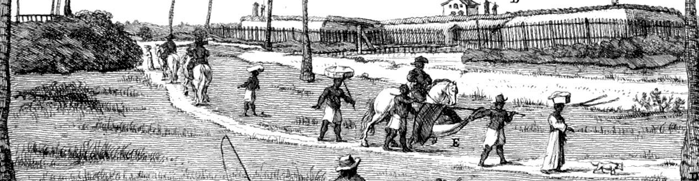
Enquanto isso, na Europa...
O açúcar que chegava das colônias americanas adoçava as bebidas e as receitas culinárias no velho mundo. Mas não
se deixe
enganar, a quantidade de açúcar disponível era pouca mesmo para aqueles que conseguiam pagar fortunas por sacas.
O consumo estava restrito às elites europeias, figuras da nobreza, e foi a partir daí que a cozinha passou a
incorporar o doce do açúcar refinado em seus pratos. Mesmo antes do açúcar chegar do oriente, os povos consumiam
o pão, a massa de óleo e trigo, popular entre todas as classes já naquela época. Nesse tempo, o que se chamava
de bolo era um tipo diferente de pão. Não havia fermento de cozinha para preparar a receita como nós conhecemos
hoje, então o bolo tinha receita semelhante a do pão, decorado com fincos na massa e gema de ovo para dar efeito
depois de assado.
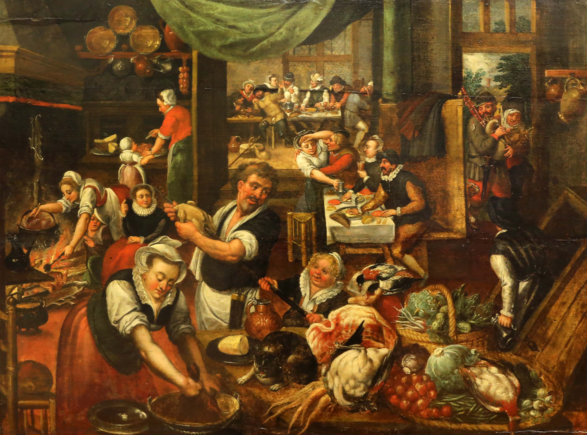
Cena de cozinha popular europeia em 1550 aprox.
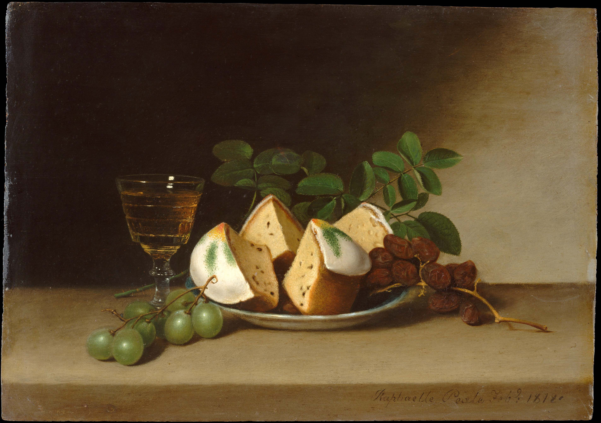
"Natureza morta com bolo", por Raphaelle Peale (1818)
É a partir do século 17 que a Europa começa a tornar popular a "sobremesa"(o que vem depois da "mesa", ou seja,
da refeição) servindo pequenos doces, substituindo as frutas. Já a partir do século 18, o açúcar começa a
aparecer de formas mais abundante na Europa (imaginem então como estava a situação nas colônias) e ele é
incorporado à receita do pão.
Apenas um século mais tarde, aparece finalmente o pão-de-ló e sua variação francesa, o gâteau roulé
(bolo enrolado),
que se tornou famoso nas comemorações natalinas da França napoleônica, no início do século 19. Nessa época, a
família real portuguesa se
mudou para o Brasil, acentuando a popularização dos costumes nobres importados de Portugal e de Paris que se
tornava
uma cidade-modelo para o mundo. Recife seria uma de suas fiéis seguidoras.
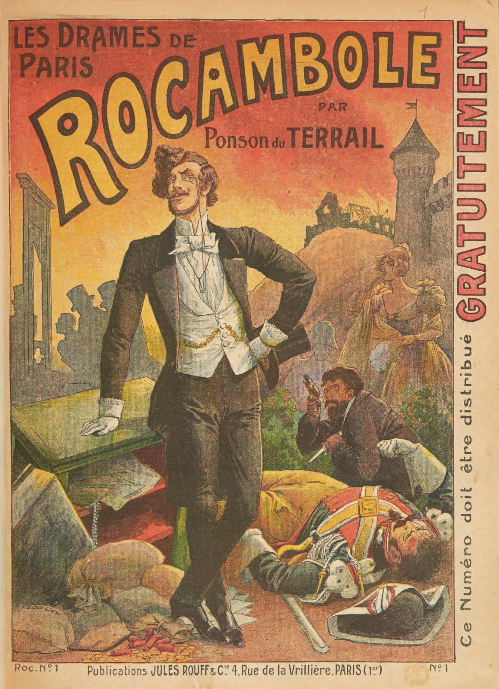
Só em 1857, na França, que a obra literária de aventura Les Drames de Paris seria publicada. Por causa
do livro, o
personagem de nome Rocambole se tornou tão popular que virou adjetivo (rocambolesco), que
significava ser aventureiro, ousado, e daria nome também ao bolo de preparação ousada mas apenas à sul do rio
São
Francisco. Isso porque a receita do bolo enrolado já estava presente nas ceias natalinas de Pernambuco.
E o bolo enrolado que chegou à Pernambuco antes do rocambole era uma variação do bolo colchão de noiva
português, duas massa de pão-de-ló com recheio doce entre elas, enroladas.
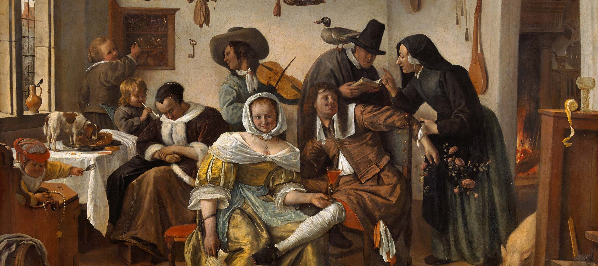
"Cuidado com a luxúria", por Jan Steen (1663)
A linha de produção pernambucana
Para saciar os desejos europeus, Recife se estabeleceu como um grande porto e armazém de toda essa produção, ao
longo dos anos. No séculos 16 e 17, nas várzeas do Recife (que compreendiam mais de um rio), os engenhos foram
sendo dispostos aproveitando as águas como meio de transporte do açúcar produzido até o centro (os rios do
Recife convergem para a atual área central) ou utilizando os existentes caminhos caetés que chegavam em
Santo Antônio passando por São José.
A cana era plantada, colhida, moída e seu caldo refinado pelos escravizados. O pó era embalado, estocado e
transportado até o porto pelos escravizados. No porto, era armazenado e transferido aos navios pelos
escravizados. Tudo sob observação dos intermediadores dos senhores da casa grande e da burocracia olindense, que
contavam e registravam cada um dos itens por onde eles passavam.
A produção de açúcar em Pernambuco atingiu uma escala tão absurda que os inúmeros armazéns no
porto e nas fazendas guardavam quase absolutamente apenas açúcar, mesmo com a extração de pau-brasil e cultivo
de algodão. Grandes galpões cheios de sacas que, durante
os acidentais (ou incidentais) incêndios que aconteceram durante a história, exalavam fumaça de cheiro doce pela
região. Todo esse exagero de produção permitiu que o consumo dentro das próprias casas grandes pernambucanas
fosse
possível em abundância também, mesmo antes de que a classe média europeia tivesse acesso ao açúcar
comercialmente. Esse acesso cedo permitiu que Pernambuco fosse berço de várias iguarias com açúcar, como o
próprio
bolo de rolo, antes mesmo que Rocambole virasse doce.
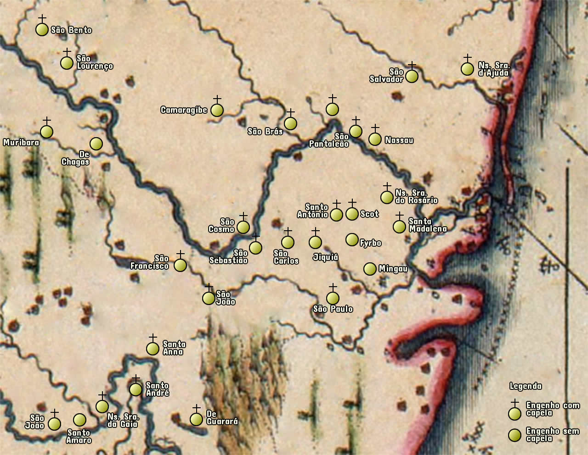
Disposição dos engenhos em Recife e arredores no século 17
O Negro na Cozinha e o Araçá
Como comentado antes, toda a produção e logística eram desempenhadas pelos negros na rua. Dentro das residências
e instituições, o negro, como já sabido, desempenhava (ou desempenha?) os serviços domésticos pesados: a
limpeza, o
leva-e-traz, o serviço de mordomia e a cozinha. Empregados de acordo com seu tipo físico e confiança dos
senhores, seus trabalhos davam vida à casa grande, aos equipamentos públicos e às instituições religiosas. É
importante anotar aqui que por negro compreende-se todas as formas de etnias racializadas presentes nesse momento
histórico em Pernambuco. Inclusive, é o termo utilizado nos próprios diários europeus da época, diferenciando
ainda no começo da invasão os nativos dos africanos por chamá-los de "negros da terra". A partir do
estabelecimento com sucesso do empreendimento português, todos os que não faziam parte da elite, ou não tivessem
alguma ascendência europeia, eram negros. Vale também anotar o termo "negro-forro" para designar figuras
escravizadas que conseguiram livrar-se da condição de "ser posse", pelo menos documentalmente.
A cozinha operada pela pessoa negra na história pernambucana define nossa cozinha hoje. É importante lembrar que
o branco sequer desempenhava atividades dentro dela se não fosse de fiscalização. As refeições eram até servidas
em um espaço diferente, as salas-de-jantar, desse reduto que era de trabalho apenas, a cozinha. Também o negro é
quem vai ter que utilizar de sua criatividade nas cozinhas das senzalas para poder sobreviver com o que lhe era
disponível: as frutas, as raízes, os grãos locais e tudo o que era possível de cultivar, além do que restava do
refinamento do caldo da
cana-de-açúcar.
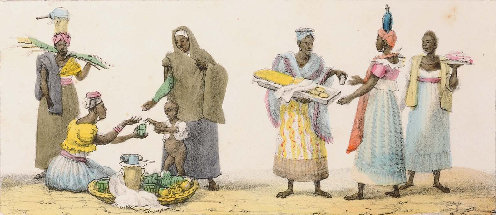
"Negras comerciantes de sonhos, manoé e aloá", por Jean-Baptiste Debret (1835)
A cozinha brasileira, que é negra, possui utensílios que não se encontrava em outras cozinhas do mundo. Exemplos
deles são os diferentes tipos de pilão e os grandes potes de água, ainda presente nas cozinhas dos interiores do
Brasil. O encontro dos costumes indígenas e africanos criou possibilidades revolucionárias, tanto dos
traços herdados da nobreza mestiça de Pernambuco, quanto das vidas anteriores à escravização nas sociedades
americanas e africanas pré-invasão europeia. E nas cozinhas dividiam-se mulheres negras, que também dedicavam-se
à criação das crianças e outros afazeres domésticos, e homens negros cujos senhores os identificavam como
ineptos ao trabalho fora da casa. Esses homens, muitas vezes identificados como afeminados ao longo da história,
serão os grandes mestres da culinária brasileira, uma vez que a cozinha será a sua maior ou única atribuição
servil na divisão das tarefas. Outras cidades do Brasil observam a mesma forma de evolução das suas cozinhas,
como Salvador na Bahia, que se tornaria outro grande pólo gastronômico, com pratos únicos frutos de todo o
sincretismo cultural de sua história.
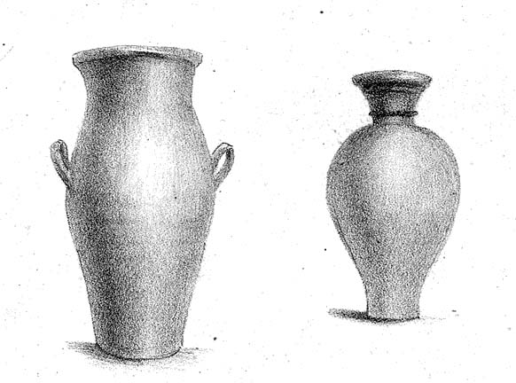
Recorte de "Vasos feitos em terracota para guardar água", Jean-Baptiste Debret (1835)
No Recife, onde suas características econômicas de gigante fábrica e armazém de açúcar e também por ser uma
apropriação do espaço de convivência do povo caeté, se observa o desenvolvimento e agregação de costumes
exclusivos. A várzea do Capibaribe é, até hoje, solo para mamoeiros, cajueiros e araçazeiros. Esse último, a
árvore do fruto araçá, que dá nome a uma lagoa urbana da cidade, é nada mais nada menos do que a
goiabeira
(Psidium guajava). Os registros históricos da fruta se dão por essa palavra, inclusive. O termo "goiaba",
que tem origem caribenha, seria introduzido no português pernambucano mais tarde.
Acontece que a receita original de colchão de noiva exigia pasta de amêndoas como recheio. E onde que se
conseguiria esse ingrediente em Pernambuco para agradar o gosto dos senhores locais? O intelecto culinário dos
cozinheiros negros em Pernambuco sugeriria a pasta de goiaba recheio. O sucesso dessa criação entre
a nobreza pernambucana forçaria a aparência grossa daqueles rolos franceses à sua apresentação mais fina e
delicada possível, desenvolvida pela cozinha negra.
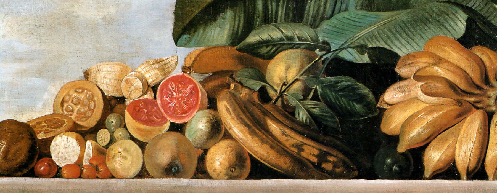
Recorte de "Bananas, goiaba e outras frutas", por Albert Eckhout (aprox. 1610~1666)
🍍🍍🍍🍍
Patrimônio Doce
O bolo de rolo seria em 2008 transformado em patrimônio cultural e imaterial de Pernambuco. Ele carrega consigo
a história de todos esses corpos negros submetidos a dor e a morte desamparada, a fim de incorporar as tradições
da metrópole
apenas para agradar os senhores brancos, cuja mentalidade limitada, colonizada, apenas os permite observar o
europeu, o branco, como de valor. Essa mentalidade se observa ainda hoje, como uma grande continuidade temporal.
É
importante anotar que esses pratos adaptados para satisfazer as mentes colonizadas, como o bolo de rolo e o bolo
Souza Leão, não são os únicos quitutes de adaptação negra por aqui. A cartola, a tapioca molhada, o cuscuz
branco,
a cocada, a pamonha doce, a canjica, o pé de moleque, o pastel de festa, a rapadura, o bolo de macaxeira, o
munguzá, entre outras delícias são até hoje atribuídas ao gosto popular, que não encontramos no que se considera
"chique", globalizado, com exceção da mesa da mais antiga nobreza pernambucana. Essa nobreza que faz
questão de expor seu apego à terra, mas continua a ignorar as problemáticas não-compensatórias a seus antigos
empregados escravizados, como se o "fim" da escravidão tivesse eliminado qualquer dívida branca e bondosamente
passasse
a ser uma permissão, apenas, de um "novo início" para a população negra.
O início da cultura da cana-de-açúcar em Pernambuco alterou toda a configuração local e desdobra todos os
eventos históricos desde então. Apenas nos últimos 50 anos do século 16, ou seja, em menos de 100 anos de
ocupação portuguesa, o porto do Recife já estaria abarrotado de armazéns e sacas de açúcar. O negócio era
extremamente lucrativo, visto que a Europa era um mercado sedento. O constante crescimento desse mercado
justificava, para os europeus, trazer mais escravizados da África. Justificava também a construção de
fortificações pela costa. Naquele tempo, se havia muito dinheiro acumulado (considerando açúcar como algo
valioso), haveria interesse externo. Portugal e Espanha foram a vanguarda das grandes navegações, mas não
demorou muito para que outras nações se lançassem ao mar também. Rondas constantes de franceses, holandeses e
ingleses eram observadas. Na transição do século 16 para o 17, Recife sofreu um grande ataque sobre seu
patrimônio doce. O porto foi invadido com sucesso por piratas.
Pra finalizar...
Confesso que fui surpreendido pela construção desse texto. Eu tinha em mente usar o bolo como alegoria pra
conduzir a conversa a história do açúcar em Recife e, claro, eu já esperava tocar nas questões dos abusos
humanitários cometidos nas Américas tão rotineiros que a partir de um momento apenas se aceita como normal,
enquanto a Europa se encantava com a novidade e as possibilidades que o açúcar trouxe a suas vidas. O que eu não
esperava era quão fundo dá pra entrar nisso. Me peguei vasculhando sites e livros que citassem bolos, pães,
doces e descobri algumas obras fantásticas que relacionam a história das sociedades com a história da
alimentação. Há, além do famoso livro de receitas "Açúcar", de Gilberto Freyre, outro dedicado à discutir a
culinária e a história do açúcar que é "Doce Pernambuco" de Raul Lody.
Descobri também, em alguns relatos em Gilberto Freyre e Evaldo Cabral de Mello, que a história das outras
colônias das Américas se confundem com as histórias de suas cozinhas também. Que as sobremesas em Nova Orleans,
nos Estados Unidos, lembram as baianas e as pernambucanas.
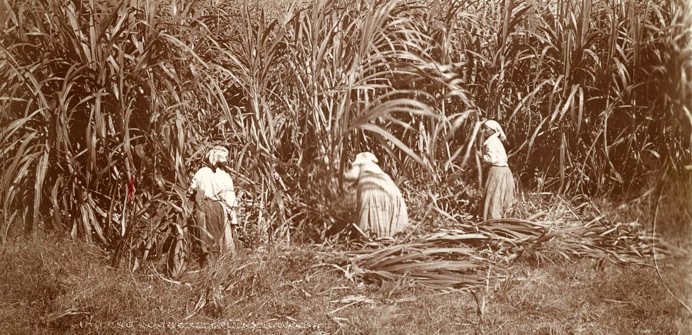
Nordeste do Brasil? Não, sudeste dos Estados Unidos...
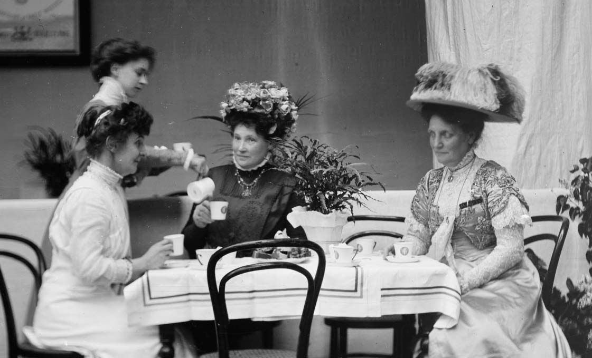
...enquanto a vida era doce na metrópole
No mais,
Você que chegou até aqui, não precisa sentir culpa da próxima vez que for comer bolo de rolo. Certo de
que não é
possível separar a história do açúcar da história de luta de libertação negra, nossas realidades precisam ser
interpretadas como resultados
das circunstâncias do passado e que elas são carentes de transformação. Somos agentes atuantes do presente.
Conhecer a
história das
coisas ao nosso redor é um processo de libertação e descoberta de vidas que estiveram sempre ali, só esperando
ser ouvidas.
Também gostaria de deixar como indicação um vídeo do Tempero Drag sobre "liberdade de escolha". Como vocês
acreditam que nos encaixamos na construção histórica das atuais circunstâncias e, diante da nossa realidade, o
que podemos fazer para construir novas circunstâncias de forma mais humana?
Mais em postagens passadas
"A aldeia de Igarassu", a chegada de Duarte Coelho à Pernambuco
"Oh! Linda situação para uma vila!", a fundação de Olinda
"Miscigenação" e o mecanismo de dominação portuguesa
Agradecimentos
Gostaria de agradecer a duas estudantes de gastronomia, @fernandaazoubel e minha amiga @falbeline por terem me atentado a explicitar a participação do
bolo colchão de noiva na origem do bolo de rolo, mandando o texto pra professores da área revisarem (hahaha suei
frio) e me indicando ótimas referências que foram adicionadas à lista desse texto. Muito obrigado!